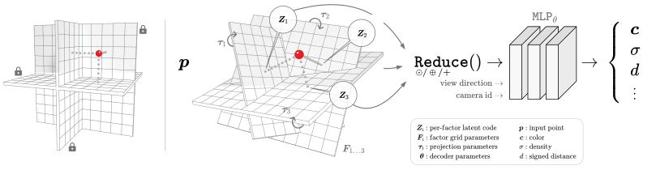
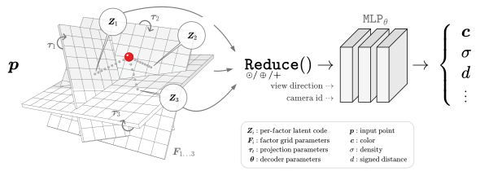
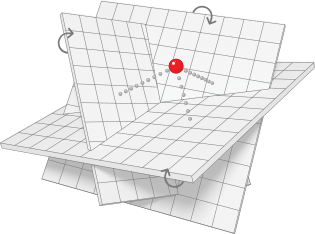
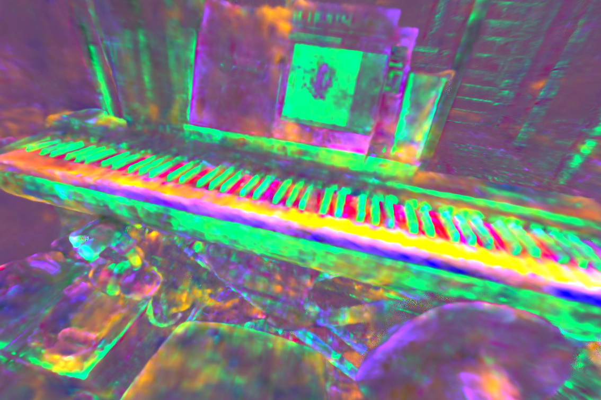
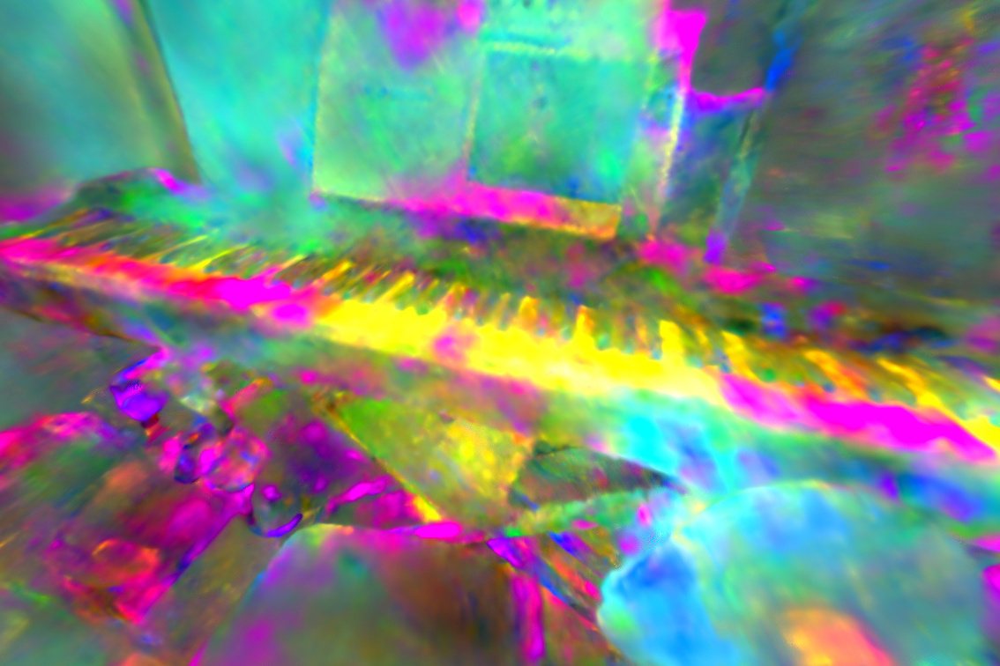
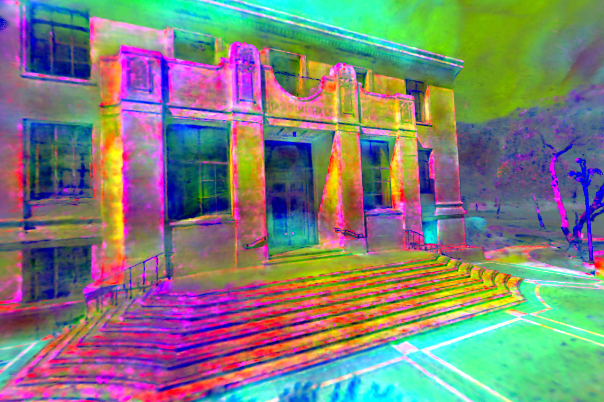
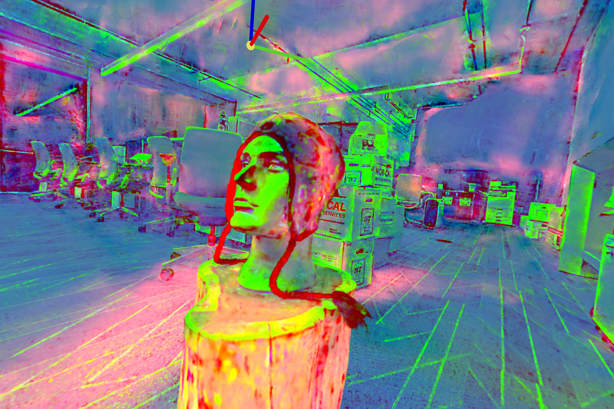
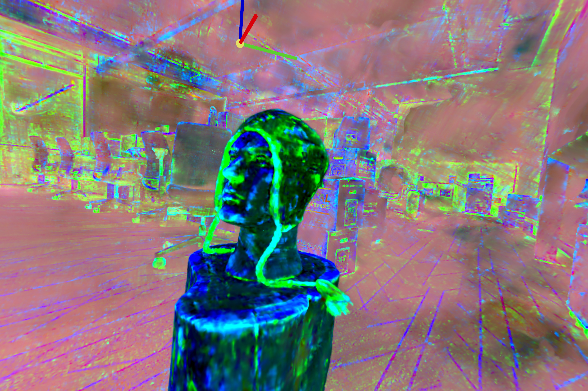
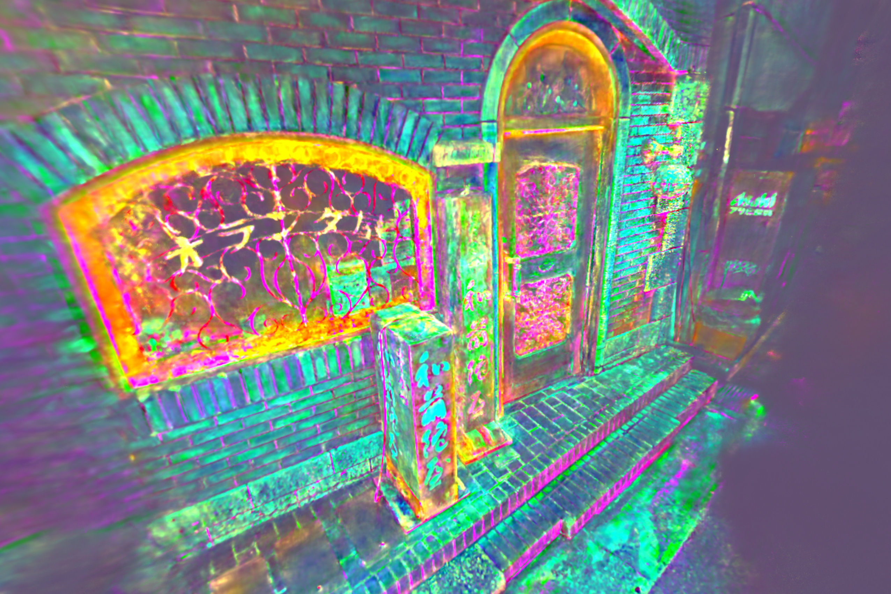
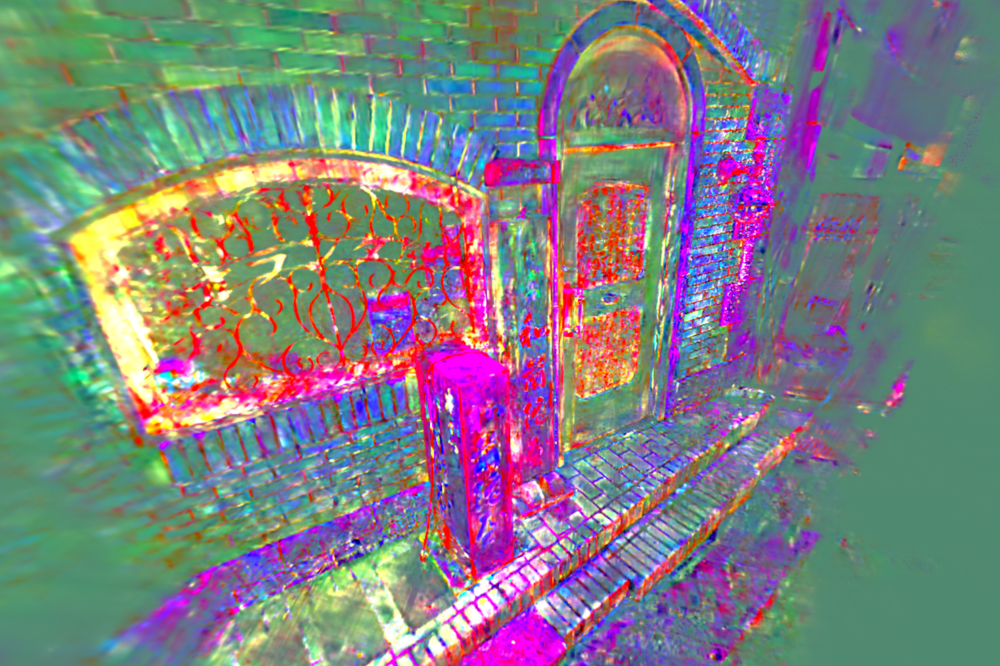

Canonical Factors for Hybrid Neural Fields
@ ICCV 2023
@inproceedings{tilted2023,
author = {Yi, Brent and Zeng, Weijia and
Buchanan, Sam and Ma, Yi},
title = {Canonical Factors for Hybrid Neural
Fields},
booktitle = {International Conference on
Computer Vision (ICCV)},
year = {2023},
}
TLDR
Factored feature volumes have an axis-alignment bias.
This can be addressed via a learned set of transforms!



Overview
We study state-of-the-art neural field architectures that rely on
factored feature volumes, by (1) analyzing factored grids in 2D to
characterize undesirable biases for axis-aligned signals, and (2) using
the resulting insights to propose TILTED, a family of hybrid
neural field architectures that removes these biases.
Qualitative Results
We explore how recovering canonical factors via a learned set
of transformations can improve factorization-based representations with
only a handful of extra parameters.
For signed distance fields, this reduces floating artifacts:
For radiance fields, it improves visual fidelity:
From the norms of interpolated features, we observe that canonicalized
factors interpretably align themself to scene geometry:
From mapping latent feature vectors to RGB via a principal component
analysis, we observe a more expressive and interpretable feature volume:







Motivation
Factored feature volumes offer advantages in compactness, efficiency,
and interpretability, but biases are introduced by an implicit frame of
representation.
The drawbacks of this are already apparent in 2D. A 2D factored grid is
simply a low-rank matrix decomposition, whose compactness can be
undermined by a simple rotation!
$
\ \ \approx
\newcommand{\w}{\color{lightgray}0}
\newcommand{\b}{1}
\Large
\hspace{0.05em}
\begin{bmatrix}
\w & \w & \w & \w & \w \\
\w & \b & \b & \b & \w \\
\w & \b & \b & \b & \w \\
\w & \b & \b & \b & \w \\
\w & \w & \w & \w & \w \\
\end{bmatrix}
\hspace{0.05em}
\normalsize
\approx
\footnotesize
\begin{bmatrix}
\w & \w & \w & \w & \w & \w & \w & \w & \w \\
\w & \w & \w & \w & \w & \w & \w & \w & \w \\
\w & \w & \b & \b & \b & \b & \b & \w & \w \\
\w & \w & \b & \b & \b & \b & \b & \w & \w \\
\w & \w & \b & \b & \b & \b & \b & \w & \w \\
\w & \w & \b & \b & \b & \b & \b & \w & \w \\
\w & \w & \b & \b & \b & \b & \b & \w & \w \\
\w & \w & \w & \w & \w & \w & \w & \w & \w \\
\w & \w & \w & \w & \w & \w & \w & \w & \w \\
\end{bmatrix}
$
✔ rank 1 can capture infinite detail
$
\ \ \approx
\newcommand{\w}{\color{lightgray}0}
\newcommand{\b}{1}
\begin{bmatrix}
\w & \w & \w & \w & \w & \w & \w \\
\w & \w & \w & \b & \w & \w & \w \\
\w & \w & \b & \b & \b & \w & \w \\
\w & \b & \b & \b & \b & \b & \w \\
\w & \w & \b & \b & \b & \w & \w \\
\w & \w & \w & \b & \w & \w & \w \\
\w & \w & \w & \w & \w & \w & \w \\
\end{bmatrix}
\normalsize
\approx
\footnotesize
\begin{bmatrix}
\w & \w & \w & \w & \w & \w & \w & \w & \w \\
\w & \w & \w & \w & \b & \w & \w & \w & \w \\
\w & \w & \w & \b & \b & \b & \w & \w & \w \\
\w & \w & \b & \b & \b & \b & \b & \w & \w \\
\w & \b & \b & \b & \b & \b & \b & \b & \w \\
\w & \w & \b & \b & \b & \b & \b & \w & \w \\
\w & \w & \w & \b & \b & \b & \w & \w & \w \\
\w & \w & \w & \w & \b & \w & \w & \w & \w \\
\w & \w & \w & \w & \w & \w & \w & \w & \w \\
\end{bmatrix}
$
✘
rank grows with desired detail, despite equivalent information
TILTED overcomes this limitation of low-rank grids by jointly optimizing
for canonical factors of the scene appearance and domain
transformations that capture viewpoint and pose.
Theoretical Grounding
Transformation optimization with a fixed representation (à la
image registration) is a challenging problem that is prone to local
minima; simultaneously learning the representation introduces further
headaches. We develop the theoretical foundations for this methodology
by proving that optimization recovers the scene appearance and
transformation parameters
in the 2D square example above. Concretely, we study an
infinite-dimensional version of the optimization problem
$$ \min_{\boldsymbol{U} \in \mathbb{R}^{n \times k},\, \phi \in [0,
2\pi]}\, \frac{1}{2} \left\| \boldsymbol{X}_{\diamond} - (\boldsymbol{U}
\boldsymbol{U}^*) \circ \boldsymbol{\tau}_{\phi} \right\|_2^2,$$
and establish that an alternating minimization approach converges
linearly to the square's true apperance and pose parameters, despite
significant nonconvexity in the objective landscape.
With an MLP decoder and regularization, our experiments extend this
paradigm to more complex signals:
Our analyses uncover a simple conceptual principle underlying the
success of our method in idealized conditions:
incremental improvements to representation promote incremental
improvements to alignment, and vice versa,
due to the constrained capacity of factored feature volumes. These
capacity constraints obtain even when the rank of the grid is large, as
a consequence of
implicit regularization in matrix factorization problems
towards low-rank solutions.
Acknowledgements
This material is based upon work supported by the National Science
Foundation Graduate Research Fellowship Program under Grant DGE 2146752,
the ONR grant N00014-22-1-2102, and the joint Simons Foundation-NSF DMS
grant 2031899.